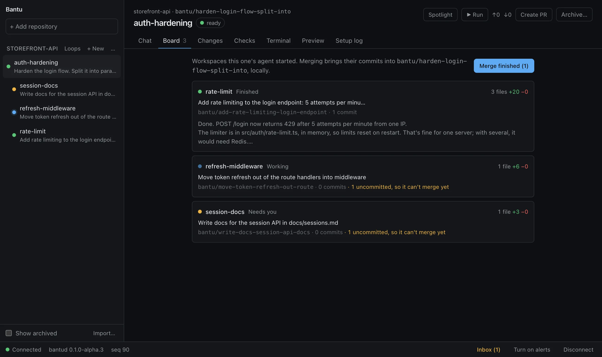
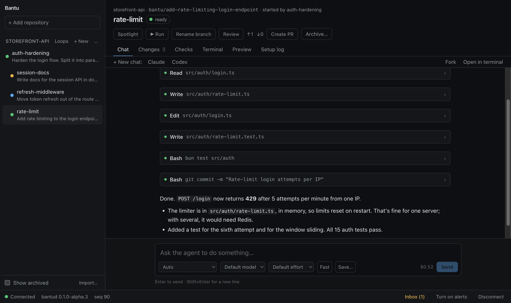
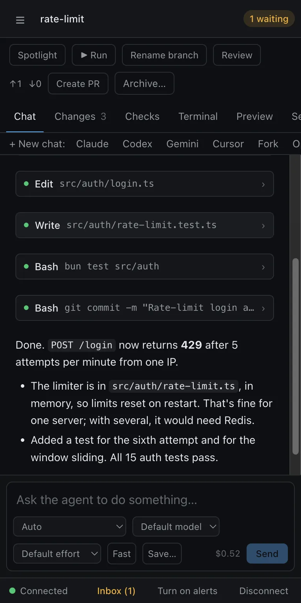

Run your coding agents side by side, each on its own branch.
Bantu is a free, open-source app for Claude Code, Codex, Gemini, OpenCode and Cursor. A small daemon on your Mac, a Linux box or your own cloud gives every task its own git worktree, so five agents can work at once without touching each other's files. You sign in with your own accounts; Bantu has none.
curl -fsSL https://raw.githubusercontent.com/Sreenivas1323/bantu/main/deploy/install.sh | sh
Alpha. macOS and Linux today; Windows is in preview. Apache-2.0.

Hand off a task, then get on with yours
- Add a repository. Bantu keeps your checkout as it is and works next to it.
- Describe the task. It gets a branch, a worktree, its own ports and a chat with the agent you pick.
- Review what changed. Read the diff, leave line comments for the agent, then open a pull request or merge it.
Agents keep working when you close the window, because the daemon runs them, not the app.

What's in it
- Agents that manage agents. A chat can start workspaces, check on them and merge the results through Bantu's own tools.
- A definition of done. Your repo's check runs after every edit, and failures go straight back to the agent.
- Conflict radar. It warns you when two workspaces are about to change the same lines.
- A second opinion. Codex can review Claude's work, or the other way round, before you look.
- Undo by turn. Restore the files to how they were before any message.
- Spotlight. Try a workspace's changes in your main checkout, where your dev setup already runs.
- Loops. Run an agent every night, or whenever an issue gets a label.
- Bring your history. Import workspaces and chats from Conductor and Pane.

Answer from your phone
Open your daemon's address on a phone and add it to the home screen. When an agent needs an approval or an answer, you get a notification, sent by your own daemon rather than a service in between.
Reach it from anywhere with Tailscale, Cloudflare Tunnel or SSH. Previews of your dev servers come along too.
Where it runs, at cost
The same daemon runs anywhere. You pay the provider directly, and Bantu runs no servers of its own.
| Where | Monthly cost |
|---|---|
| Your laptop | $0 |
| A machine you own, through Tailscale or Cloudflare Tunnel | $0 extra |
| Your AWS account, on a machine that stops itself when idle | ≈ $7 at 4 hours a day |
| The same, at your own domain through CloudFront | ≈ $10 at 4 hours a day |
| Bursts of parallel tasks on Vercel Sandbox or Cloudflare Containers | A few cents a task |